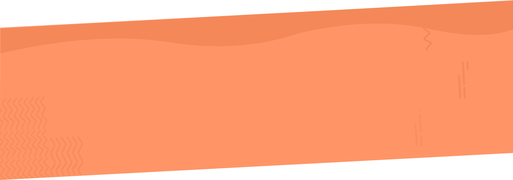

WAAROM MOTION DESIGN?
Motion design wordt steeds populairder. Interface animaties kunnen namelijk de gebruikerservaring op verschillende vlakken versterken. Vroeger werd niemand enthousiast van bewegingen op web, maar tegenwoordig speelt UI motion een grote rol bij het omgaan en gebruiken van producten. Op deze one pager vertellen we je alles over UI motion. We laten voorbeelden zien en vertellen je waarom het gebruik van UI Motion Design als designer belangrijk is. Met de tips die we geven kun je gelijk aan de slag!

Ogen volgen beweging, dus het geeft bedrijven de mogelijkheid om gebruikers subtiel te begeleiden.

Motion design helpt bij het creëren van prettige en intuïtieve gebruikersinterfaces.

U kunt animatie afstemmen op de behoeften van uw gebruiker om waarde toe te voegen.

Motion design kan gebruikt worden om een merk te versterken.
"Apps are like cakes, cannot only look good.
They have to be tasted by the eyes of the user in motion"

Antalik, J. (2019, 20 februari). Dribbble: Upload window interactions. Geraadpleegd op 16 december 2019, van https://dribbble.com/shots/6052541-Upload-window-interactions
HET IS FUNCTIONEEL
Het toont de hiërarchie tussen elementen en de beschikbare acties. Wat gebeurt er en wat gebeurt er als een actie wordt ondernomen. Het geeft je een beetje visuele feedback. Er is geen foutmelding zoals "oh verkeerd wachtwoord", het is slechts een kleine animatie die je vertelt en je weet precies wat er is gebeurd. Het is een klein ding dat je veel dingen vertelt. Is gaat terug naar de lichaamstaal, als je iets fout doet zou ik ook nee naar je schudden.
HET VOELT NATUURLIJK AAN
Het voelt alsof het tactiel is, dat het op je vingers reageert. Het heeft een choreografie en het voelt sierlijk aan. Het maakt gebruik van krachten van de echte wereld, het is alsof iets gewoon logisch is. Elementen handelen zoals je het van hen verwacht.
Wangxin, J. (2019, 28 november). Dribbble: Daily music recommendation software. Geraadpleegd op 16 december 2019, van https://dribbble.com/shots/7859350-Daily-music-recommendation-software
Steele-Eklund, Z. (2019, 20 mei). Dribbble: No to. Geraadpleegd op 16 december 2019, van https://dribbble.com/shots/6508084-No-Tos
HET VOEGT KARAKTER TOE
Het helpt met het uiten van een merkpersoonlijkheid en stijl. De animaties hebben niet altijd als doel om het gebruiksvriendelijk te maken. Het doel is om de merk persoonlijk te versterken. Deze manier van animatie zie je bijvoorbeeld ook vaak terug komen in videogames.